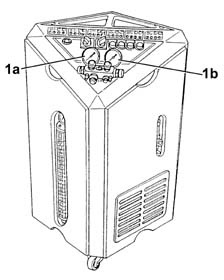
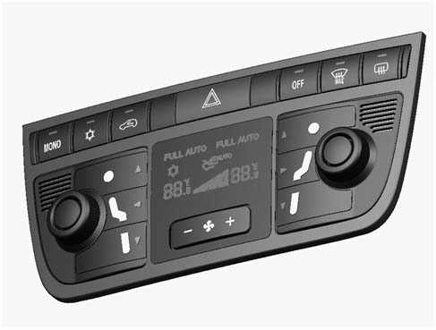

5040B CHECK ON OPERATION OF AIR CONDITIONING SYSTEM (PRESSURES)
- Path
- Test > 50 AUXILIARY UNITS > 5040 AIR CONDITIONING CASING AND COMPONENTS > 5040B CHECK ON OPERATION OF AIR CONDITIONING SYSTEM (PRESSURES)
- Kind
- test / check procedure
- Applies to
- all engines; all production periods
- Interactive page
- https://sloeber94.github.io/elrnDB-lYpsln/en/#/2429800
Applies to: all engines; all production periods
Connect the recharging device to the air conditioning system () in order to read the low pressure and high pressure values.

Applies to: all engines; all production periods
Connect the recharging device to the air conditioning system () in order to read the low pressure and high pressure values.
Applies to: all engines; all production periods
Start the engine and run it at idle speed.
Deactivate recirculation (led on button off).
Press the fan speed increase button until 12 bars are showing on the display.
Turn the temperature knob until it is at the coldest setting (LOW).
Deactivate the compressor by pressing the appropriate button (both temperature displays should flash)
Check on the recharging device's low and high pressure gauges, that the pressure is within 5 bars for an ET of about 20°C, and about 6 bars for an ET of about 30°C
Activate the air conditioner (led on compressor activation key on).
Check that within 1 minute the pressure reaches 2.5 - 3 bar on the low pressure gauge and 15 - 16 bar on the high pressure gauge.
Wait for the engine cooling fan to come on.
Check that the pressure reaches 1.5 - 1.8 bar on the low pressure gauge and 10 - 12 bar on the high pressure gauge .
Check that the engine cooling fan goes off when the high pressure drops to 11-12 bars.

Applies to: all engines; all production periods
Start the engine and run it at idle speed.
Deactivate recirculation (led on button off).
Press the fan speed increase button until 12 bars are showing on the display.
Turn the temperature knob until it is at the coldest setting (LOW).
Deactivate the compressor by pressing the appropriate button (both temperature displays should flash)
Check on the recharging device's low and high pressure gauges, that the pressure is within 5 bars for an ET of about 20°C, and about 6 bars for an ET of about 30°C
Activate the air conditioner (led on compressor activation key on).
Check that within 1 minute the pressure reaches 2.5 - 3 bar on the low pressure gauge and 15 - 16 bar on the high pressure gauge.
Wait for the engine cooling fan to come on.
Check that the pressure reaches 1.5 - 1.8 bar on the low pressure gauge and 10 - 12 bar on the high pressure gauge .
Check that the engine cooling fan goes off when the high pressure drops to 11-12 bars.